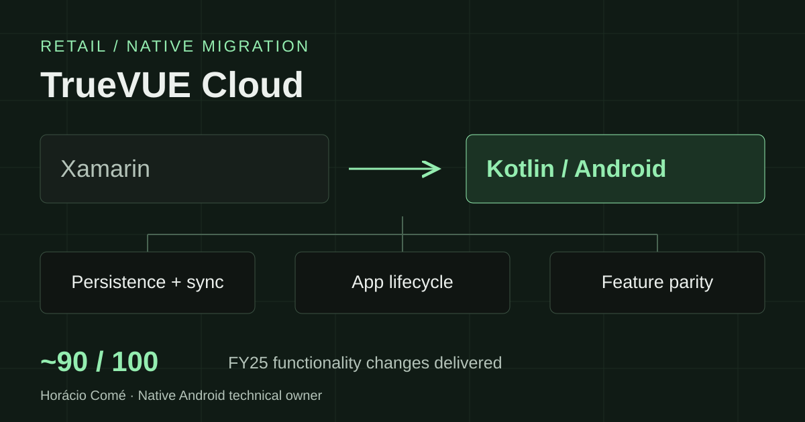

Android case study · Retail analytics
Moving TrueVUE Cloud from Xamarin to native Android.
Technical ownership of a Kotlin migration, with a focus on the persistence, synchronization, and lifecycle work needed to make a device-connected retail app ready for release.
- Role
- Senior Software Engineer
Native Android technical owner - Organization
- Johnson Controls / Sensormatic
- Period & status
- Jan 2024–present
Ongoing native migration

The product and the problem
TrueVUE Cloud Analytics is a retail product with complex external-device and inventory workflows, including RAIN RFID: radio-frequency identification used to work with tagged items. The Android work involved moving an existing Xamarin application to a native Kotlin foundation while working toward feature parity.
A central blocker was the local data layer. The existing multi-database persistence and synchronization implementation suffered from cross-instance race conditions, failed or hung transactions, and inconsistent data. Those problems affected the ability to run reliable end-to-end tests.
What I owned
I was the technical owner of native Android development, collaborating with other developers on the broader architecture and engineering standards. My direct responsibilities went beyond individual screens:
- Persistence and synchronization. Independently redesigned the data-intensive, multi-database layer to replace the implementation affected by concurrency and transaction failures.
- Application behavior. Designed and owned lifecycle management, custom application events, and background processing.
- Feature migration. Delivered about 90 of 100 legacy-to-native functionality changes in FY25.
- Release readiness. Worked on MVVM refactoring, code standards, release-build validation, and security-aware build and API-key handling.
- Team delivery. Mentored and onboarded engineers through code reviews and collaborative debugging across internal and partner teams.
Engineering priorities
Fix the foundation that blocked validation
The persistence and synchronization work addressed the shared data layer behind the application. Replacing that implementation made it possible to move forward with end-to-end testing. I also resolved a long-standing resource leak.
Treat lifecycle and background work as owned systems
Alongside the database work, I took responsibility for application lifecycle management, custom events, and background processing. These were explicit areas of ownership within the wider Android migration.
Carry migration work through to release validation
The work included Cycle Count performance problems, complex device bugs, native Android build validation, and release readiness. Feature parity, maintainability, and the behavior of release builds all mattered to delivery.
Documented outcomes
- End-to-end testing unblockedThe database and synchronization refactor removed a major blocker to validating complete application flows.
- About 90 of 100 FY25 functionality changes deliveredThese were legacy-to-native migration changes, advancing feature parity and release readiness.
- Resource and device issues resolvedFixed a long-standing resource leak, Cycle Count performance issues, and complex device bugs.
Technical scope
Technologies: Kotlin, Android, MVVM, local persistence, and background processing.
Responsibilities: multi-database synchronization, application lifecycle, external-device workflows, migration delivery, code review, and release validation.